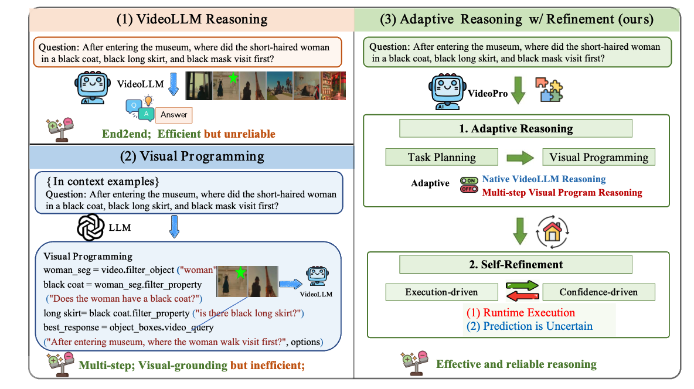
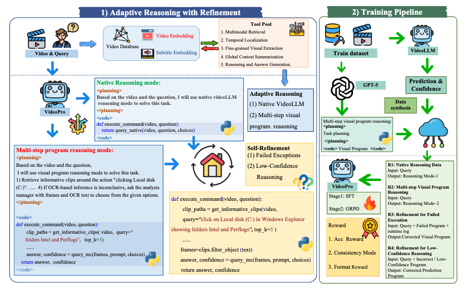
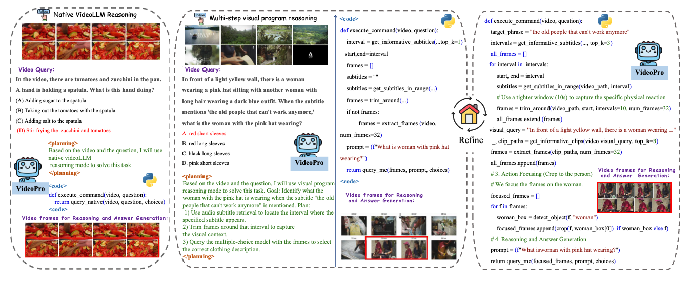
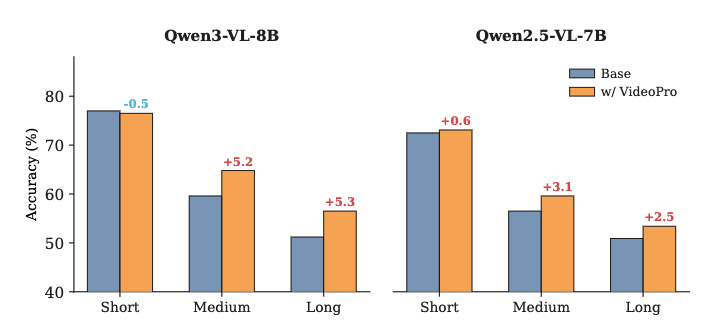

@article{li2025videopro,
title={VideoPro: Adaptive Program Reasoning for Long Video Understanding},
author={Li, Chenglin and Han, Feng and Wang, Yikun and Li, Ruilin and Dong, Shuai and Hou, Haowen and Li, Haitao and Chen, Qianglong and Tao, Feng and Tong, Jingqi and others},
journal={arXiv preprint arXiv:2509.17743},
year={2025}
}